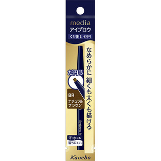

返回列表
产品名称：メディア アイブロウペンシルAA（だ円） ナチュラルブラウン

カネボウ化粧品 メディア アイブロウペンシルAA（だ円） ナチュラルブラウン ＢＲ
メーカー カネボウ化粧品
JANコード 4973167131268
商品の特徴
くり出し・だ円
なめらかに細くも太くも描ける
汗・水にも落ちにくい
成分・分量
トリステアリン、（カプリル／カプリン／ミリスチン／ステアリン酸）トリグリセリル、ミツロウ、水添ヒマシ油、タルク、オレイン酸フィトステリル、ポリエチレン、マイクロクリスタリンワックス、メチコン、水溶性コラーゲン、トコフェロール、[＋/－]コンジョウ、酸化チタン、酸化鉄、マイカ
用法及び用量
●眉毛の１本１本を描くようにして眉全体の形を整えます。